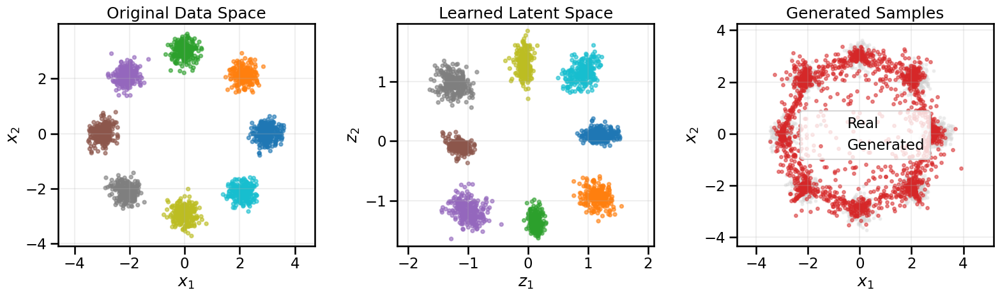
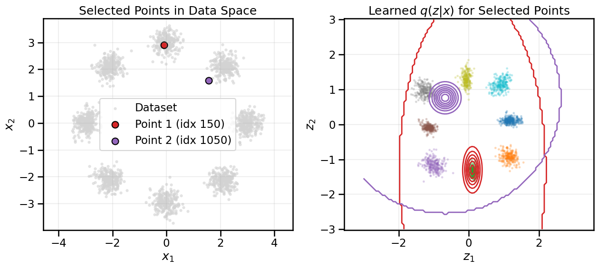

In the previous notebooks, we explored push-forward generative models (GANs) and then moved to optimal transport approaches. These models excel at generating samples by learning a mapping \(f(z) \rightarrow x\) from latent space to data space. However, they have a significant limitation: they don’t provide a way to go backwards – to encode a real data point \(x\) back into the latent space \(z\).
Variational Autoencoders (VAEs) address this limitation by learning both directions simultaneously:
An encoder that maps data to latent space: \(q_\phi(z|x)\)
A decoder that maps latent space to data: \(p_\theta(x|z)\)
We saw this kind of encoder-decoder structure before when we discussed (non-variational) Autoencoders, but only in the context of deterministic mappings for dimension reduction. Now, we will extend this idea to probabilistic mappings that allow us to both generate new data and infer latent representations with explicit likelihoods.
13.1 Learning Objectives
Understand the architecture and motivation behind Variational Autoencoders
Learn about the Evidence Lower Bound (ELBO) and why it’s used for training
Explore the role of the KL divergence regularization term
Build and train a simple VAE on 2D data
Visualize the learned latent space and understand the encoder-decoder relationship
Compare VAEs to GANs and understand their respective strengths
Show Code
# Setup and Importsimport numpy as npimport matplotlib.pyplot as pltimport seaborn as snsimport torchimport torch.nn as nnimport torch.optim as optimfrom dataclasses import dataclassfrom typing import List# Optional interactive widgetstry:from ipywidgets import interact, FloatSlider, IntSlider widgets_available =TrueexceptException: interact =None FloatSlider = IntSlider =None widgets_available =False# Import shared utilities from the local modulefrom gen_models_utilities import ( device, create_ring_gaussians, make_loader, compute_diversity_metric, plot_model_diagnostics, plot_latent_interpolation)plt.style.use('seaborn-v0_8-muted')sns.set_context('talk')print(f"Using device: {device}")
Using device: cuda
13.2 What is a Variational Autoencoder?
To understand VAEs, let’s start with regular autoencoders. An autoencoder is a neural network trained to compress data into a lower-dimensional representation (encoding) and then reconstruct the original data from that compressed form (decoding). The key insight is that if we can successfully compress and reconstruct data, the compressed representation must capture the essential features of the original dataset, in a possibly more interpretable form.
However, regular autoencoders have a problem: the latent space can be irregular and discontinuous. Two similar data points might end up far apart in latent space, making it hard to generate new samples or interpolate smoothly. This is not a problem as far as a regular Autoencoder is concerned, since its only goal in life is to reconstruct the training data well (it doesn’t care about interpolation or what the latent space might mean).
Variational Autoencoders solve this by imposing structure on the latent space. Instead of encoding a data point \(x\) to a single point \(z\), a VAE encodes it to a probability distribution over \(z\). This is typically a Gaussian distribution with mean \(\mu\) and standard deviation \(\sigma\):
where \(\phi\) represents the encoder parameters (typically those of a neural network).
The decoder then samples from this distribution to reconstruct the data: \[p_\theta(x|z) = \mathcal{N}(x; \mu_\theta(z), \sigma_\theta^2(z))\]
where \(\theta\) represents the decoder parameters.
With this, we actually have two types of probabilistic models, one that can compute the likelihood of a data point (\(x\)) given a latent code (\(z\)), and a second that can infer a distribution over latent codes (\(z\)) given a data point (\(x\)).
13.2.1 The ELBO: Why VAEs Work
VAEs are trained by maximizing the Evidence Lower Bound (ELBO), which decomposes into two terms:
Reconstruction term: This measures how well the decoder can reconstruct the original data from the latent representation. It’s similar to a standard autoencoder loss.
KL divergence term: This regularizes the latent space by encouraging \(q_\phi(z|x)\) to be close to a prior distribution \(p(z)\) (typically a standard normal \(\mathcal{N}(0, I)\)). This ensures the latent space is well-behaved and continuous.
The KL term has a nice closed-form solution when both distributions are Gaussian:
Let’s step back a moment and think about what this term is encouraging. \(p(z)\) is fixed, so the only thing we are changing when we optimize the KL divergence is \(q_\phi\) (via the Neural Network weights \(\phi\)). What is \(\phi\) trying to do? Given an \(x\) from our training data, \(\phi\) will transform it to \(z\) using the encoder’s neural network, and this will constitute a distribution over \(z\) influenced by \(x\), specifically, \(z \sim \mathcal{N}(z; \mu_\phi(x), \sigma_\phi^2(x))\). So this will produce a tiny little Gaussian blob in \(z\) for that given \(x\), and the KL divergence will penalize this \(q_\phi(z|x)\) from being “far” (in a KL sense) from \(p(z)\). However, this doesn’t mean that \(q_\phi(z|x)\) will look at all like \(p(z)\), rather, \(p(z)\) is just sort of gently encouraging \(q_\phi(z|x)\) to remaining close by to \(p(z)\). In fact, \(q_\phi(z|x)\) can’t look too much like \(p(z)\) because then \(q_\phi(z|x)\) would be conditionally independent from \(x\) and this would make it hard for the decoder (\(p_\theta(x|z)\)) to reproduce \(x\) well.
13.2.2 The Reparameterization Trick
To train VAEs with backpropagation, we need gradients to flow through the sampling operation. The reparameterization trick achieves this by rewriting the sampling as:
Now the randomness is moved to \(\epsilon\), and gradients can flow through \(\mu\) and \(\sigma\).
13.3 Building a Simple VAE
Let’s implement a VAE for our familiar 2D ring dataset. We’ll keep the architecture simple so we can visualize and understand what’s happening.
Show Code
# Load the ring datasetX_ring, y_ring = create_ring_gaussians(n_samples=2000)fig, ax = plt.subplots(1, 1, figsize=(6, 6))sc = ax.scatter(X_ring[:, 0], X_ring[:, 1], c=y_ring, cmap='tab10', s=15, alpha=0.6)plt.colorbar(sc, label='Mode index')ax.set_title('Target: Ring of Gaussians')ax.set_xlabel('$x_1$')ax.set_ylabel('$x_2$')ax.axis('equal')ax.grid(True, alpha=0.2)plt.tight_layout()plt.show()
13.3.1 VAE Architecture
Our VAE will consist of two networks:
Encoder: Takes 2D data and outputs the parameters (\(\mu\), \(\log\sigma^2\)) of a Gaussian distribution in latent space
Decoder: Takes a latent code \(z\) and reconstructs the 2D data point
For this simple example, we’ll use 2D latent space so we can visualize it directly.
class Encoder(nn.Module):"""Encoder network that maps data to latent distribution parameters."""def__init__(self, x_dim: int=2, hidden_dim: int=128, z_dim: int=2):super().__init__()self.net = nn.Sequential( nn.Linear(x_dim, hidden_dim), nn.ReLU(), nn.Linear(hidden_dim, hidden_dim), nn.ReLU() )# Output mean and log-variance of the latent distributionself.mu_layer = nn.Linear(hidden_dim, z_dim)self.logvar_layer = nn.Linear(hidden_dim, z_dim)def forward(self, x: torch.Tensor): h =self.net(x) mu =self.mu_layer(h) logvar =self.logvar_layer(h)return mu, logvarclass Decoder(nn.Module):"""Decoder network that maps latent codes back to data space."""def__init__(self, z_dim: int=2, hidden_dim: int=128, x_dim: int=2):super().__init__()self.net = nn.Sequential( nn.Linear(z_dim, hidden_dim), nn.ReLU(), nn.Linear(hidden_dim, hidden_dim), nn.ReLU(), nn.Linear(hidden_dim, x_dim) )def forward(self, z: torch.Tensor):returnself.net(z)class VAE(nn.Module):"""Variational Autoencoder combining encoder and decoder."""def__init__(self, x_dim: int=2, z_dim: int=2, hidden_dim: int=128):super().__init__()self.encoder = Encoder(x_dim, hidden_dim, z_dim)self.decoder = Decoder(z_dim, hidden_dim, x_dim)self.z_dim = z_dimdef reparameterize(self, mu: torch.Tensor, logvar: torch.Tensor):"""Reparameterization trick: z = mu + sigma * epsilon""" std = torch.exp(0.5* logvar) eps = torch.randn_like(std)return mu + eps * stddef forward(self, x: torch.Tensor):# Encode mu, logvar =self.encoder(x)# Sample from latent distribution z =self.reparameterize(mu, logvar)# Decode x_recon =self.decoder(z)return x_recon, mu, logvar, zdef encode(self, x: torch.Tensor):"""Encode data to latent space (returns mean of distribution).""" mu, _ =self.encoder(x)return mudef decode(self, z: torch.Tensor):"""Decode latent codes to data space."""returnself.decoder(z)
13.3.2 The VAE Loss Function
The VAE loss combines reconstruction error and KL divergence. For reconstruction, we’ll use mean squared error (MSE), which corresponds to assuming a Gaussian likelihood with a mean at the decoder value (\(\hat{x} = \mu_\theta(z)\)) and a variance \(\sigma_\theta^2\) that could be output by the decoder:
In a simplified case, we could set \(\sigma_\theta^2\) to be a constant value (\(\sigma^2\)) in which case the only job of the decoder would be to output a single vector (the mean value \(\hat{x} = \mu_\theta(z)\)) and then the constant \(\sigma^2\) would effectively control the trade-off between reconstruction accuracy and regularization strength.
def vae_loss(x: torch.Tensor, x_recon: torch.Tensor, mu: torch.Tensor, logvar: torch.Tensor, beta: float=1.0, reconstruction_variance: float=0.1):""" Compute VAE loss = Reconstruction loss + beta * KL divergence. Args: x: Original data x_recon: Reconstructed data mu: Mean of latent distribution logvar: Log-variance of latent distribution beta: Weight for KL term (beta=1 is standard VAE, beta>1 is beta-VAE) reconstruction_variance: Assumed variance of reconstruction distribution """# Reconstruction loss (MSE scaled by assumed variance) recon_loss = torch.sum((x - x_recon) **2, dim=1) / (2* reconstruction_variance)# KL divergence between q(z|x) and p(z) = N(0,I)# KL(N(mu, sigma^2) || N(0,1)) = 0.5 * sum(mu^2 + sigma^2 - log(sigma^2) - 1) kl_div =-0.5* torch.sum(1+ logvar - mu.pow(2) - logvar.exp(), dim=1)# Total loss (negative ELBO)return (recon_loss + beta * kl_div).mean(), recon_loss.mean(), kl_div.mean()
13.3.3 Training the VAE
Now let’s train our VAE on the ring dataset. We’ll track both the reconstruction loss and KL divergence separately to understand how the model learns.
@dataclassclass VAEHistory:"""Training history for VAE.""" loss: List[float] recon_loss: List[float] kl_loss: List[float] diversity: List[float]def train_vae( data: np.ndarray, x_dim: int=2, z_dim: int=2, hidden_dim: int=128, batch_size: int=256, epochs: int=200, lr: float=1e-3, beta: float=1.0, reconstruction_variance: float=0.1, print_every: int=50):""" Train a VAE on the provided data. Args: data: Training data (numpy array) x_dim: Dimension of data space z_dim: Dimension of latent space hidden_dim: Hidden layer dimension batch_size: Batch size for training epochs: Number of training epochs lr: Learning rate beta: Weight for KL term (beta-VAE parameter) reconstruction_variance: Assumed variance of reconstruction distribution print_every: Print progress every N epochs Returns: Trained VAE model and training history """# Setup data loader loader = make_loader(data, batch_size)# Initialize model and optimizer vae = VAE(x_dim=x_dim, z_dim=z_dim, hidden_dim=hidden_dim).to(device) optimizer = optim.Adam(vae.parameters(), lr=lr)# Training history history = VAEHistory(loss=[], recon_loss=[], kl_loss=[], diversity=[])print(f"Training VAE for {epochs} epochs...")print(f"Parameters: z_dim={z_dim}, beta={beta}, recon_var={reconstruction_variance}, lr={lr}") vae.train()for epoch inrange(epochs): epoch_losses = [] epoch_recon = [] epoch_kl = []for (batch,) in loader: batch = batch.to(device)# Forward pass x_recon, mu, logvar, z = vae(batch)# Compute loss loss, recon, kl = vae_loss(batch, x_recon, mu, logvar, beta, reconstruction_variance)# Backward pass optimizer.zero_grad() loss.backward() optimizer.step() epoch_losses.append(loss.item()) epoch_recon.append(recon.item()) epoch_kl.append(kl.item())# Record metrics mean_loss = np.mean(epoch_losses) mean_recon = np.mean(epoch_recon) mean_kl = np.mean(epoch_kl)# Compute diversity (sample from prior and decode)with torch.no_grad(): z_samples = torch.randn(2048, z_dim, device=device) x_samples = vae.decode(z_samples) diversity = compute_diversity_metric(x_samples) history.loss.append(mean_loss) history.recon_loss.append(mean_recon) history.kl_loss.append(mean_kl) history.diversity.append(diversity)if (epoch +1) % print_every ==0or epoch ==0:print(f"Epoch {epoch+1:03d}/{epochs} | Loss: {mean_loss:.3f} | "f"Recon: {mean_recon:.3f} | KL: {mean_kl:.3f} | Div: {diversity:.3f}")return vae, history
Show Code
# Train the VAEvae, history = train_vae( X_ring, x_dim=2, z_dim=2, hidden_dim=128, epochs=400, batch_size=256, lr=1e-3, beta=1.0, reconstruction_variance=0.1, print_every=50)
One of the most powerful aspects of VAEs is that we can visualize the latent space directly (since we’re using 2D latent codes). Let’s see how the VAE has organized the ring data in latent space.
Show Code
# Encode all data points to latent spacevae.eval()with torch.no_grad(): X_tensor = torch.from_numpy(X_ring).float().to(device) z_encoded = vae.encode(X_tensor).cpu().numpy()# Generate samples from prior z_prior = torch.randn(2000, 2, device=device) x_generated = vae.decode(z_prior).cpu().numpy()# Visualizefig, axes = plt.subplots(1, 3, figsize=(16, 5))# Original data spacesc0 = axes[0].scatter(X_ring[:, 0], X_ring[:, 1], c=y_ring, cmap='tab10', s=15, alpha=0.6)axes[0].set_title('Original Data Space')axes[0].set_xlabel('$x_1$')axes[0].set_ylabel('$x_2$')axes[0].axis('equal')axes[0].grid(True, alpha=0.2)# Latent space (colored by original mode)sc1 = axes[1].scatter(z_encoded[:, 0], z_encoded[:, 1], c=y_ring, cmap='tab10', s=15, alpha=0.6)axes[1].set_title('Learned Latent Space')axes[1].set_xlabel('$z_1$')axes[1].set_ylabel('$z_2$')axes[1].axis('equal')axes[1].grid(True, alpha=0.2)# Generated samplesaxes[2].scatter(X_ring[:, 0], X_ring[:, 1], c='lightgray', s=8, alpha=0.3, label='Real')axes[2].scatter(x_generated[:, 0], x_generated[:, 1], c='tab:red', s=12, alpha=0.5, label='Generated')axes[2].set_title('Generated Samples')axes[2].set_xlabel('$x_1$')axes[2].set_ylabel('$x_2$')axes[2].axis('equal')axes[2].grid(True, alpha=0.2)axes[2].legend()plt.tight_layout()plt.show()

13.4.1 Visualizing \(q_\phi(z|x)\)
The encoder learns to map each input data point \(x\) to a distribution in the latent space, not just a single point. Let’s pick two points from our dataset and visualize the corresponding Gaussian distributions \(q_\phi(z|x)\) that the encoder has learned for them.
# Select two points from the datasetpoint_1_idx, point_2_idx =150, 1050x_1 = torch.from_numpy(X_ring[point_1_idx]).float().to(device)x_2 = torch.from_numpy(X_ring[point_2_idx]).float().to(device)# Get the parameters of q(z|x) for these two pointsvae.eval()with torch.no_grad(): mu_1, logvar_1 = vae.encoder(x_1.unsqueeze(0)) mu_2, logvar_2 = vae.encoder(x_2.unsqueeze(0))# Create distributionsstd_1 = torch.exp(0.5* logvar_1)dist_1 = torch.distributions.MultivariateNormal(mu_1.squeeze(), torch.diag(std_1.squeeze().pow(2)))std_2 = torch.exp(0.5* logvar_2)dist_2 = torch.distributions.MultivariateNormal(mu_2.squeeze(), torch.diag(std_2.squeeze().pow(2)))
Show Code
# Create a grid for the latent space plotz_range =3.0z_grid_pts =100z1_grid = torch.linspace(-z_range, z_range, z_grid_pts, device=device)z2_grid = torch.linspace(-z_range, z_range, z_grid_pts, device=device)Z1, Z2 = torch.meshgrid(z1_grid, z2_grid, indexing='xy')z_grid_tensor = torch.stack([Z1.flatten(), Z2.flatten()], dim=1)# Evaluate densities on the gridlog_prob_1 = dist_1.log_prob(z_grid_tensor)log_prob_2 = dist_2.log_prob(z_grid_tensor)prob_1 = log_prob_1.exp().reshape(z_grid_pts, z_grid_pts).cpu().numpy()prob_2 = log_prob_2.exp().reshape(z_grid_pts, z_grid_pts).cpu().numpy()# Visualizefig, axes = plt.subplots(1, 2, figsize=(13, 6))color1, color2 ='tab:red', 'tab:purple'# Left plot: Original data spaceaxes[0].scatter(X_ring[:, 0], X_ring[:, 1], c='lightgray', s=10, alpha=0.5, label='Dataset')axes[0].scatter(x_1[0].cpu(), x_1[1].cpu(), color=color1, s=100, ec='black', label=f'Point 1 (idx {point_1_idx})')axes[0].scatter(x_2[0].cpu(), x_2[1].cpu(), color=color2, s=100, ec='black', label=f'Point 2 (idx {point_2_idx})')axes[0].set_title('Selected Points in Data Space')axes[0].set_xlabel('$x_1$')axes[0].set_ylabel('$x_2$')axes[0].axis('equal')axes[0].grid(True, alpha=0.2)axes[0].legend()# Right plot: Latent space distributionsaxes[1].contour(Z1.cpu().numpy(), Z2.cpu().numpy(), prob_1, colors=color1, linewidths=2)axes[1].contour(Z2.cpu().numpy(), Z1.cpu().numpy(), prob_2, colors=color2, linewidths=2)# Also plot the full latent space encoding for contextaxes[1].scatter(z_encoded[:, 0], z_encoded[:, 1], c=y_ring, cmap='tab10', s=5, alpha=0.2)axes[1].set_title('Learned $q(z|x)$ for Selected Points')axes[1].set_xlabel('$z_1$')axes[1].set_ylabel('$z_2$')axes[1].axis('equal')axes[1].grid(True, alpha=0.2)plt.tight_layout()plt.show()

13.4.2 Visualizing the Latent Space Manifold
Since both our data and latent space are 2D, we can create a grid in latent space and see what the decoder produces at each point. This helps us understand how the VAE has organized the latent space.
TipExperiment: Effect of re-weighting the KL Divergence term
We can see above that reconstruction_variance essentially sets the variances of the Gaussian outputs for the reconstructed data points. - Mathematically, what does setting this to a small variance imply for the loss function? What about a big variance? - Try modifying the reconstruction_variance above from a small number to a large one, e.g., 0.01 to 5.0. What happens to the output of the VAE? Why is this? (Note: if you go below about 0.1 then you may have to increase the learning rate of number of epochs unless it converges.)
13.5 Comparing VAEs to GANs and OT Models
Now that we understand VAEs, let’s compare them to the other generative models we’ve studied:
Aspect
GAN
OT GAN
VAE
Architecture
Generator + Discriminator
Generator only
Encoder + Decoder
Training
Adversarial (minimax)
Direct divergence minimization
Maximize ELBO
Stability
Can be unstable
More stable
Generally stable
Forward map
Yes (\(z \rightarrow x\))
Yes (\(z \rightarrow x\))
Yes (\(z \rightarrow x\))
Inverse map
No
No
Yes (\(x \rightarrow z\))
Mode coverage
Prone to mode collapse
Good coverage
Good coverage
Interpretability
Limited
Limited
Good (latent space mirrors \(p(z)\))
13.5.1 When to use VAEs:
When you need an encoder: If you want to map real data to latent codes (for analysis, interpolation, or compression)
For smooth interpolation: The regularized latent space makes interpolation meaningful
When interpretability matters: VAEs often learn more interpretable latent representations
When training stability is important: VAEs are generally easier to train than GANs
13.5.2 When to use GANs or OT models:
When sample quality is paramount: GANs often produce sharper, more realistic samples
When you only need generation: If you don’t need to encode real data
For specific domains: GANs can excel at images, videos, and other perceptual data compared to VAEs (at least historically)
13.6 Summary and Looking Forward
In this notebook, we explored Variational Autoencoders (VAEs), which provide a principled approach to learning bidirectional mappings between data and latent space:
13.6.1 Key Takeaways:
VAEs learn distributions: Unlike deterministic autoencoders, VAEs encode data as distributions in latent space, enabling smooth interpolation and principled sampling.
The ELBO objective: VAEs maximize a lower bound on the data likelihood, balancing reconstruction accuracy with latent space regularization.
KL divergence regularization: This term ensures the latent space is well-behaved (close to a standard normal), making sampling and interpolation meaningful.
Bidirectional mapping: VAEs provide both encoding (\(x \rightarrow z\)) and decoding (\(z \rightarrow x\)), enabling applications like representation learning and data analysis.
13.6.2 Limitations and Extensions:
While VAEs are powerful, they have some limitations: - Blurry samples: The MSE reconstruction loss can lead to averaged, blurry outputs - Posterior collapse: In high dimensions, the KL term can dominate, causing the model to ignore the encoder - Limited expressiveness: The Gaussian assumption may be too restrictive for complex distributions
Modern extensions address these issues (not covered here): - β-VAE: Adjustable β for better disentanglement - Normalizing Flow VAEs: Use more expressive posterior distributions - Vector Quantized VAEs (VQ-VAE): Discrete latent codes for sharper reconstructions - Hierarchical VAEs: Multiple layers of latent variables for richer representations
13.6.3 Next Steps:
VAEs created an important step beyond GAN models in that they allowed us to model probability distributions over both the output data samples from the generator \(p_\theta(z|x)\) but also the possible latent codes via an encoder \(q_\phi(z|x)\). However, the VAE was only able to predict the latent codes using an approximation method (variational inference) by assuming a \(q\) and minimizing the ELBO.
What if it were possible to learn both \(p(x|z)\) and \(q(z|x)\) exactly? In the next notebook, we’ll explore Normalizing Flows, which provide another way to learn bidirectional mappings with exact likelihood computation. Unlike VAEs, flows are deterministic and invertible, allowing for exact inference without variational approximations. This makes them particularly useful when we need precise likelihood estimates or want to avoid the approximation errors inherent in VAEs.